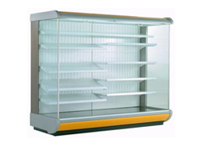
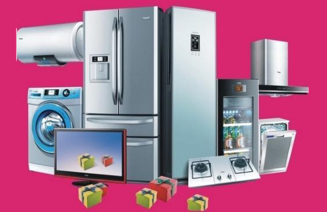

-

酒店用品回收的好处和重要意义
在现今这个倡导保护的环境社会，环保意识已经渐渐地深入了人心，特别是在这个酒店用品回收的行业，更加的是用实际行动来有效的节约了有效资源的浪... -
音响回收时如何测试功率
随着生活水平的提高，娱乐活动及场所也越来越多，ktv就是客户常去的娱乐场所之一。在选购KTV音响回收的时候往往会挑选音响功率比较大的。原因是音响... -

变频空调的变频器发热是什么原因
大家都有发烧发热的经历，体温高而且浑身无力，不像吃饭，器变频器热....... -

为什么要淘汰老旧空调？
空调带给人们的享受是众所周知的，不仅可以制冷亦能制热。长期以往，当季节变化、昼夜温差变化与空调实际应用过程中运行模式下不能实现动态调节的... -
常用的酒店饭店设备有哪些
无论是星级酒店还是一般的小酒店，除了为客人提供住宿的服务外，还需要提供餐饮服务。酒店的美食是需要厨具才能烹饪出来，由于量比较大，酒店里的...